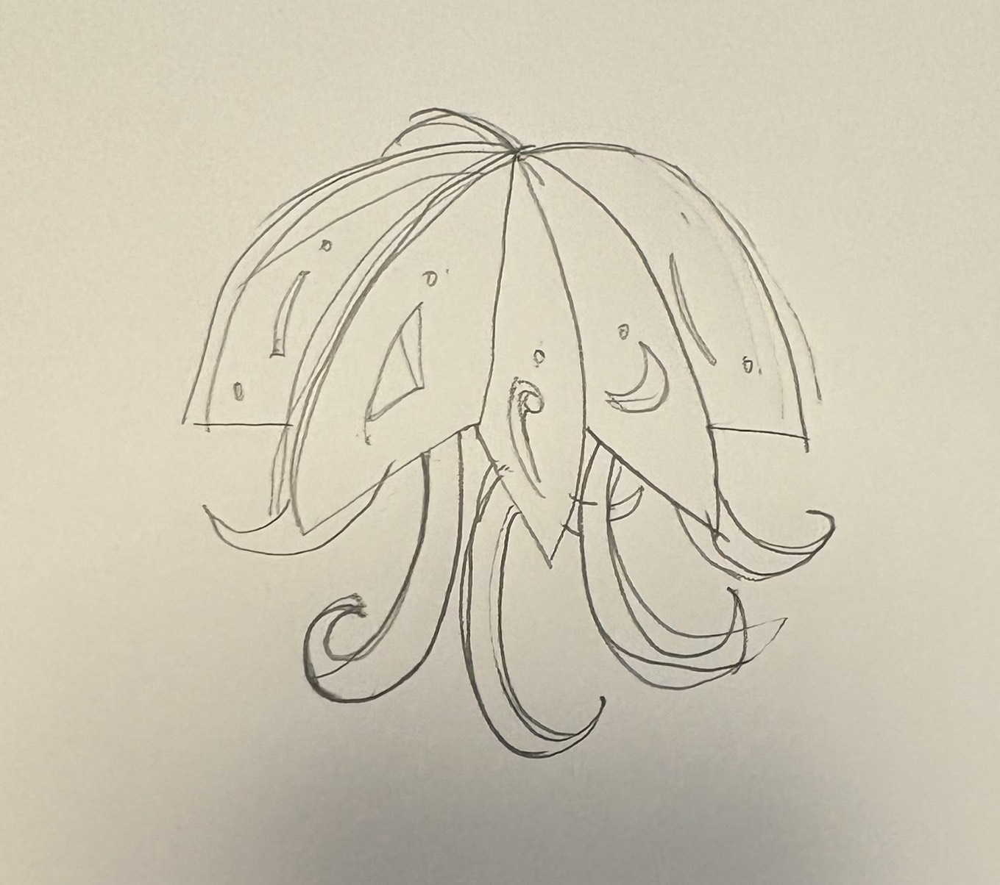
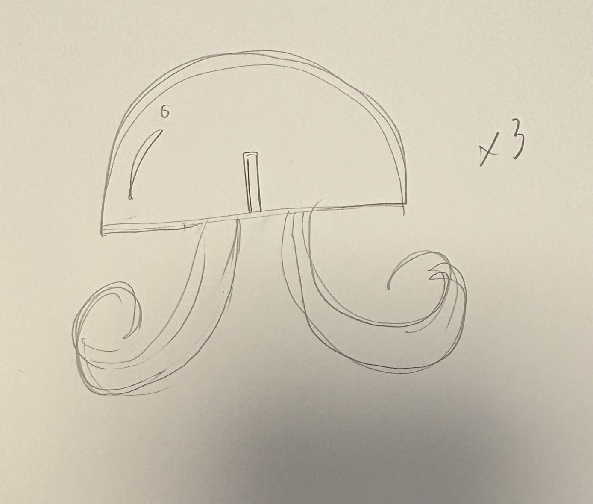
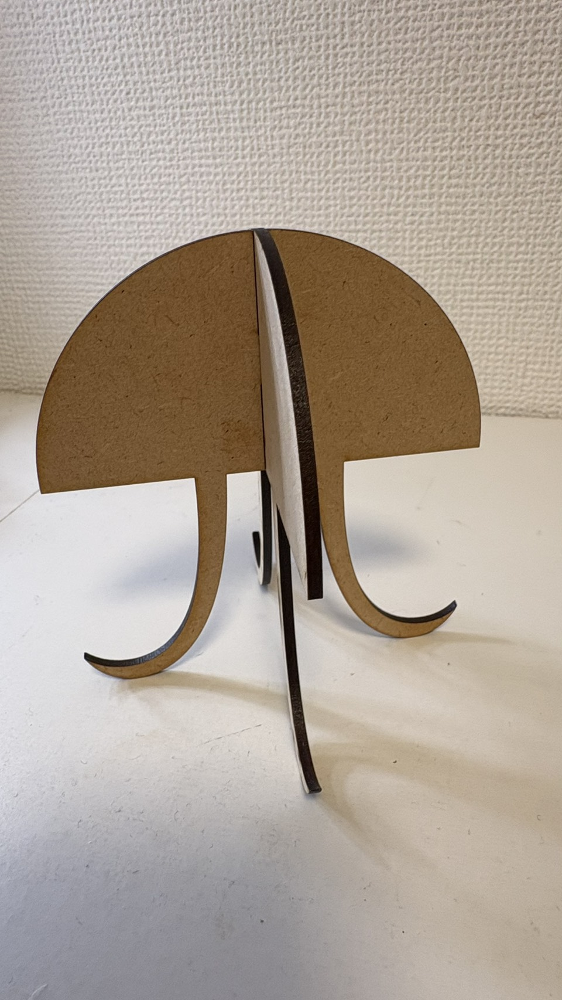
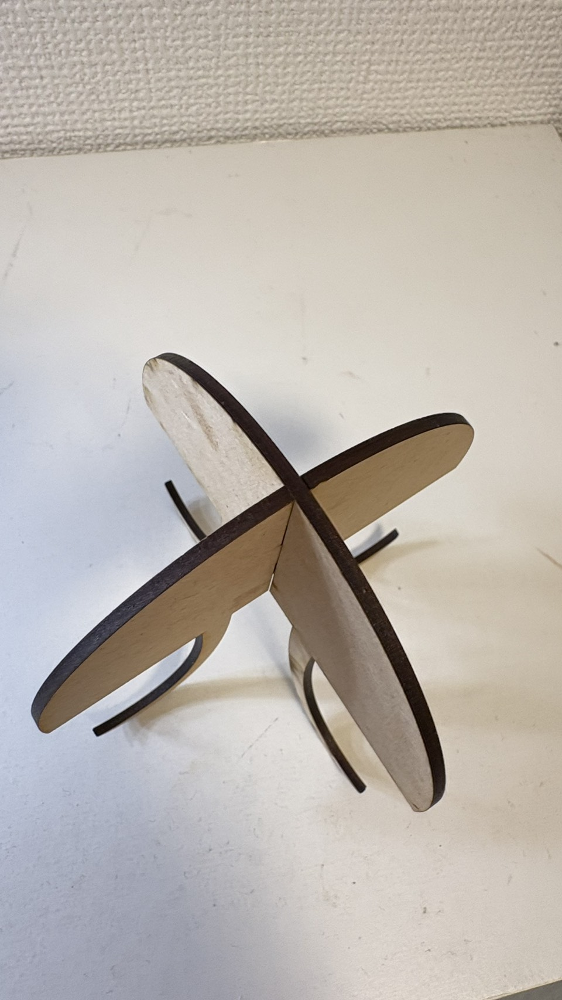
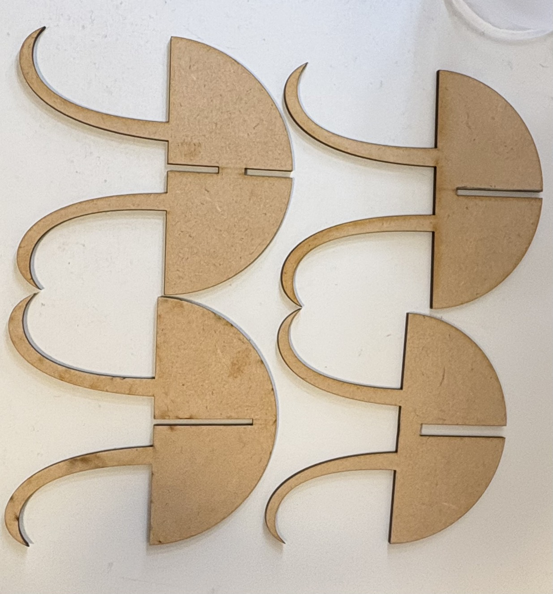

組み立て式クラゲ
スケッチ




作品



作品の説明
クラゲの組み立て式オブジェ。 もうすぐクリスマスの季節でいろんなところにツリーが建てられてるのを見て、 見てるだけでわくわくキラキラするようなものを作りたいと思った。 クリスマスツリーはこの時期だけだから、 ほかのものでツリーみたいにクロスしあって作れるものを 作ろうと思ってクラゲにした。
作ってみて
ほんとは三枚を交差させたかったけど、 切れ込みをぜんぶ2.5mmで作ったため うまく入らなかったから、次は幅を変えて ちょうどはまる長さを見つけたい。また、一回足の長さが長いものを作ったときに 段になって足が浮く感じになったから、足の長さも変えて設計したらキーホルダーなどをかけられる フックみたいにもなるかなと思ったから、機会があったらもう一度やりたい。